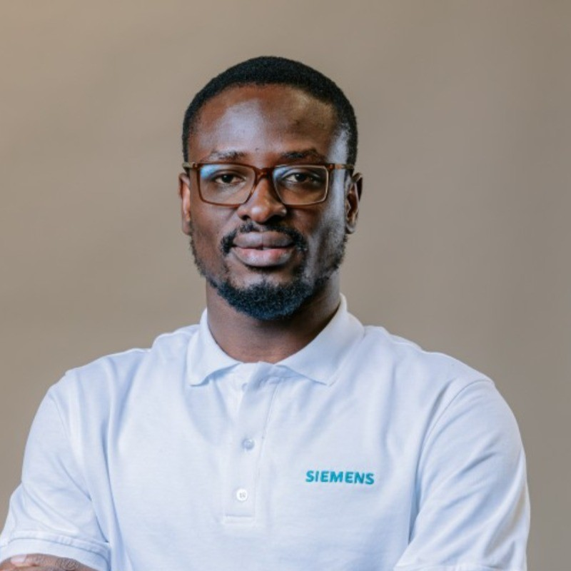

System Engineer in Grid Software at Siemens, working at the intersection of power systems, smart grids and enterprise utility software.

I am an electrical and electronic engineer based in Accra, Ghana, focused on smart grids and power systems.
Since 2024 I have been a System Engineer in Siemens' Grid Software team for the Middle East & Africa, providing technical ownership and application support for the Electricity Company of Ghana's national Metering Management System (MMS), a smart-metering environment serving more than 1.8 million metering endpoints. I hold a BSc in Electrical and Electronic Engineering from Kwame Nkrumah University of Science and Technology (KNUST).
[Placeholder: optional personal note]
[Placeholder: short description]
[Placeholder: short description]
[Placeholder: short description]
A full list of certifications is on LinkedIn.